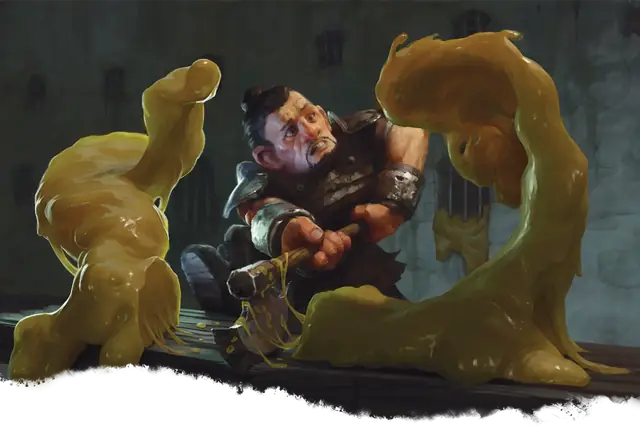

Золотистый студень
Ochre Jelly
Большая Слизь, без мировоззрения

Класс Защиты 8 Инициатива −2 (8)
Хиты 52 (7к10 + 14)
Скорость 20 футов, Лазания 20 футов
| мод | спас | ||
|---|---|---|---|
| СИЛ | 15 | +2 | +2 |
| ЛОВ | 6 | −2 | −2 |
| ТЕЛ | 14 | +2 | +2 |
| мод | спас | ||
|---|---|---|---|
| ИНТ | 2 | −4 | −4 |
| МДР | 6 | −2 | −2 |
| ХАР | 1 | −5 | −5 |
Сопротивление урону Кислота
Иммунитеты Рубящий, Электричество; Испуганный, Истощение, Оглохший, Опрокинутый, Опутанный, Очарованный, Схваченный
Чувства пассивное Восприятие 8, Слепое зрение 60 футов
Языки нет
Опасность 2 (450 опыта; БВ +2)
Особенности
Аморфность. Золотистый студень может проходить через пространство шириной всего 1 дюйм, не тратя на это дополнительное перемещение.
Паучье лазание. Золотистый студень может лазать по сложным поверхностям, включая потолки, без совершения проверок характеристик.
Действия
Ложноножка. Бросок рукопашной атаки: +4, досягаемость 5 фт. Попадание: 12 (3к6 + 2) урона Кислотой.
Реакции
Разделение. Условие: Студень Среднего или Большого размера с 10 или более Хитами становится Окровавленным или получает Рубящий урон или урон Электричеством. Эффект: Студень разделяется на два новых Золотистых студня. Новые студни на одну категорию размера меньше исходного и действуют с той же Инициативой. У каждого нового студня половина Хитов исходного (округляя вниз).
Бонус мастерства +2
Среда обитания Подземье
Сокровища Отсутствуют
Золотистые студни
Делящаяся хищная амёба
Золотистые студни — гигантские жёлто-коричневые амёбы, поглощающие органическую жизнь. Они без устали охотятся на некрупную добычу и легко обтекают препятствия у себя на пути. После подавления сопротивления жертвы эти кислотные слизи растворяют её плоть, волосы и даже чешую и оставляют после себя только одежду, снаряжение, выделанную кожу и кости.
Когда бурое желе получает рубящий урон или урон электричеством, оно разделяется на две отдельные студня. Эти более мелкие студни действуют сообща, чтобы поглотить врагов, но затем каждое продолжает охоту в одиночку и со временем вырастает до размеров первоначальной особи.
Всё, что золотистый студень не может растворить, остаётся лежать нетронутым. Совершите бросок по таблице «Остатки трапезы золотистого студня» для вдохновения или выберите сами такие останки.
Остатки трапезы золотистого студня
| 1к6 | После приёма пищи бурое желе оставило… |
| 1 | Кость, на которой вырезано слово или мистический знак. |
| 2 | Сломанные рога драконорожденного или тифлинга. |
| 3 | Изысканный протез конечности. |
| 4 | Скелет питомца путешественника (например, маленькой собаки, обезьяны или попугая). |
| 5 | Череп с золотым зубом стоимостью 1к4 ЗМ. |
| 6 | Идеально чистый комплект металлической брони. |